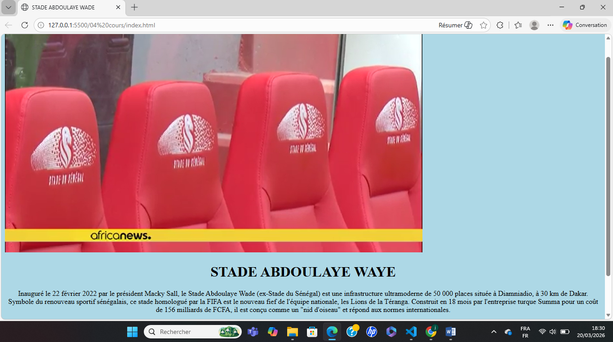
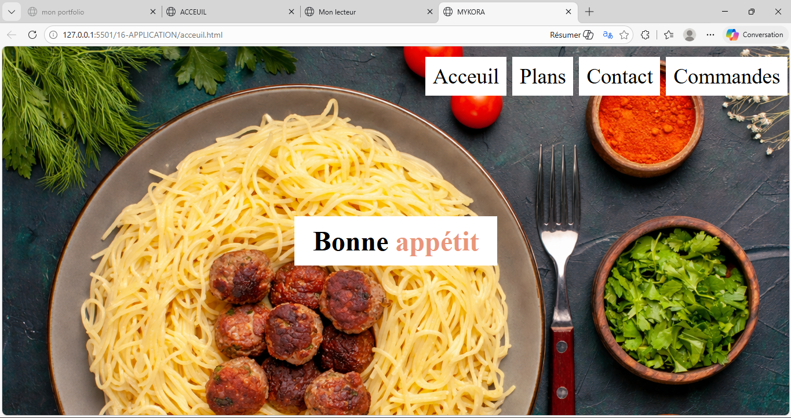
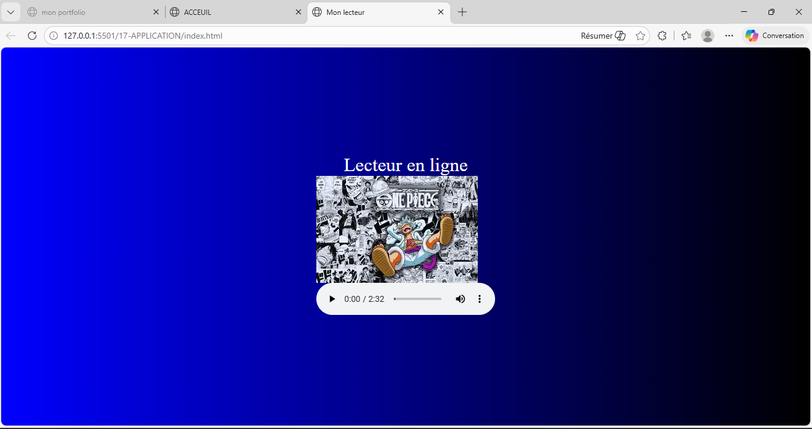
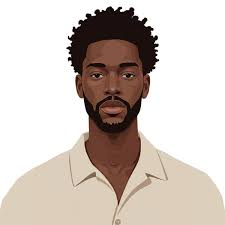
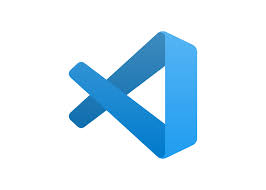

Un étudiant passionné par la création et l'innovation, je me suis lancé dans cette filiére pour accomplir de grande choses dans ce monde.Révant tout les jours d'une boite qui est MICROSOFT, cette filiére me permettra d'accomplir mon rêve et de faire partie de cette grande famille.Sans oublier que je suis un étudiant qui aime les défis et qui est prêt à relever tous les défis pour atteindre mes objectifs.
Pour un aperçu de ce que j'ai pû réalisé pour l'instant, veuillez consulter mes projects en appuyant sur PROJETS.

Comme je le disais je suis quelqu'un de pasionné j'ai toujours étais fasciné par l'innovation et la création des nouveauux outils du quotidien qui aideront les gens sans doutes tout les jours leur facilité la vie, c'est pour cela que j'ai choisi cette filiére, pour pouvoir créer des outils qui aideront les gens et qui les rendront heureux.je veux monté des gros startups, lancé ma propre satellite et fournir les données à tout le monde gratuitement pour que tout le monde puisse en profiter et faire de ce monde un meilleur endroit pour vivre. Et pour cela je suis prêt à travaillé dur et à relever tous les défis qui se présenteront à moi pour atteindre mes objectifs.
Eleve de la Licence 1 en Génie Logiciel et Administration des Réseaux a l'école supérieur de technologie et de manangement (ESTM) de la promotion(2025-2026).
bon voici les projets que j'ai pu réalisé en classe et dans un cadre personnel plus éthique



C'est ces quatre projets que j'ai pu réalisé en classe et dans un cadre personnel plus éthique
Le premier c'est le stade Abdoulaye Wade cliquer ici pour consulter
Le deuxiéme est le site d'un restaurant qu'on a réalisé cliquer ici pour consulter
Le troisième est le lecteur en ligne cliquer ici pour consulter
Le quatrième est le projet Packet Tracer que j'ai réalisé avec un ami dont on a mis 3 réseau LAN en place interconnectés par 3 routeurs et un switch et qui lui est aussi relié a deux ordinateurs on a configuré le DHCP et le DNS pour que les ordinateurs puissent communiquer entre eux et avec internet.cliquera href="http://yamarkamara-collab.github.io/projet-pro/">ici
La techno utilisé pour les projects 123 est:

La techno utilisé pour le project 4 est:
Obtention du Baccalauréat scientifique (S2) avec mention Assez-Bien.
Inscription en Licence 1 à L'Université Numérique Cheikh Hamidou Kane (UNCHK) dans la filiére de informatique et developpement d'application (IDA).
Admission en Licence 1 en Génie Logiciel et Administration des Réseaux à l'École Supérieure de Technologie et de Management (ESTM).
pour tout contact veuillez remplir le formulaire suivant merci